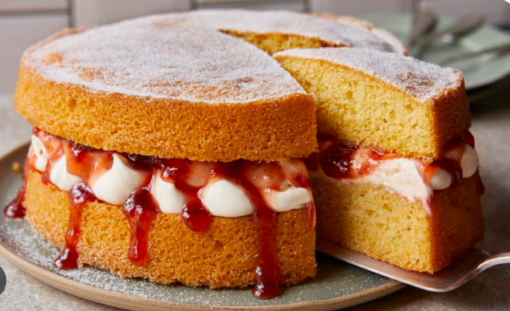

English Loaf Cake

Here is a simple and fast recipe for an English Loaf Cake. It is light, soft, and easy to bake in a standard bread tin.
Ingredients
- 1 cup all-purpose flour
- ½ cup white sugar
- 1 teaspoon baking powder
- 2 large eggs
- 1 teaspoon vanilla extract
- ¼ cup vegetable oil
- ½ cup milk
Instructions
- Mix the wet base: Beat the eggs and vanilla together in a bowl. Add the sugar and beat until the mix looks pale and light.
- Add liquids: Pour in the vegetable oil and stir. Then, pour in the milk and mix well.
- Add dry ingredients: Sift the flour and baking powder together. Gently fold them into the wet mix using a large spoon.
- Prepare the pan: Grease a rectangular loaf pan and dust it lightly with a little flour.
- Bake: Pour the batter into the pan. Bake at 150°C (302°F) on the middle oven rack until done (about 1 hour to 1 hour 15 minutes).
- Cool and serve: Let the cake cool completely on a wire rack before you slice and eat it.
Back Home
Potatoes Chilis Recipes
Sausage recipe